Perl 数组
Perl 数组一个是存储标量值的列表变量，变量可以是不同类型。
数组变量以 @ 开头。访问数组元素使用 $ + 变量名称 + [索引值] 格式来读取，实例如下：
实例
#!/usr/bin/perl
@race = ("Human", "Orc", "Night elf", "Undead");
@names = ("Varian Wrynn", "Thrall", "Illidan Stormrage", "Arthas Menethil");
print "\$race[0] = $race[0]\n";
print "\$race[1] = $race[1]\n";
print "\$race[2] = $race[2]\n";
print "\$race[3] = $race[3]\n";
print "\$names[0] = $names[0]\n";
print "\$names[1] = $names[1]\n";
print "\$names[2] = $names[2]\n";
print "\$names[3] = $names[3]\n";
程序中 $ 符号使用了 \ 来转义，让他原样输出。
执行以上程序，输出结果为：

创建数组
数组变量以 @ 符号开始，元素放在括号内，也可以以 qw 开始定义数组。
@array = (1, 2, 'Hello');
@array = qw/这是 一个 数组/;
第二个数组使用 qw// 运算符，它返回字符串列表，数组元素以空格分隔。当然也可以使用多行来定义数组：
@days = qw/google
taobao
...
runoob/;
你也可以按索引来给数组赋值，如下所示：
$array[0] = 'Monday';
...
$array[6] = 'Sunday';
访问数组元素
访问数组元素使用 $ + 变量名称 + [索引值] 格式来读取，实例如下：
实例
@families = qw/Gambino Genovese Colombo Lucchese Bonanno/;
print "$families[0]\n";
print "$families[1]\n";
print "$families[2]\n";
print "$families[-1]\n";
print "$families[-2]\n";
执行以上程序，输出结果为：
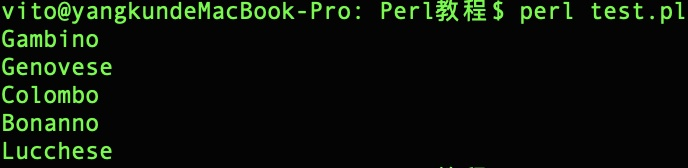
数组索引值从 0 开始，即 0 为第一个元素，1 为第二个元素，以此类推。
负数从反向开始读取，-1 为第一个元素， -2 为第二个元素
数组序列号
Perl 提供了可以按序列输出的数组形式，格式为 起始值 + .. + 结束值，实例如下：
实例
#!/usr/bin/perl
@var_10 = (1..10);
@var_20 = (10..20);
@var_abc = (a..z);
print "@var_10\n";
print "@var_20\n";
print "@var_abc\n";
执行以上程序，输出结果为：
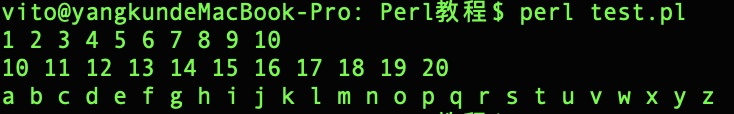
数组大小
数组大小由数组中的标量上下文决定。：
@array = (1,2,3);
print "数组大小: ",标量 @array,"\n";
数组长度返回的是数组物理大小，而不是元素的个数，我们可以看以下实例：
实例
#!/uer/bin/perl
@array = (1,2,3);
$array[50] = 4;
$size = @array;
$max_index = $#array;
print "数组大小: $size\n";
print "最大索引: $max_index\n";
执行以上程序，输出结果为：
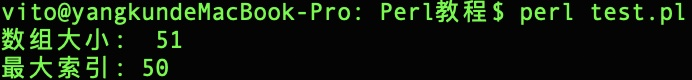
从输出的结果可以看出，数组元素只有四个，但是数组大小为 51。
添加和删除数组元素
Perl 提供了一些有用的函数来添加和删除数组元素。
如果你之前没有编程经验，可能会问什么是函数，其实我们之前使用的 print 即是一个输出函数。
下表列出了数组中常用的操作函数：
| 序号 |
类型和描述 |
| 1 |
push @ARRAY, LIST
将列表的值放到数组的末尾 |
| 2 |
pop @ARRAY
删除数组的最后一个值 |
| 3 |
shift @ARRAY
弹出数组第一个值，并返回它。数组的索引值也依次减一。 |
| 4 |
unshift @ARRAY, LIST
将列表放在数组前面，并返回新数组的元素个数。 |
实例
#!/usr/bin/perl
@house = ("Lannister","Baratheon","Targaryen","Tully","Arryn","Tyrell","Martell");
$new_size = @house ;
print "1. \@house = @house\n"."原数组长度 ：$new_size\n";
$new_size = push(@house, "Greyjoy");
print "2. \@house = @house\n"."新数组长度 ：$new_size\n";
$new_size = unshift(@house, "Stark");
print "3. \@house = @house\n"."新数组长度 ：$new_size\n";
$new_byte = pop(@house);
print "4. \@house = @house\n"."弹出元素为 ：$new_byte\n";
$new_byte = shift(@house);
print "5. \@house = @house\n"."弹出元素为 ：$new_byte\n";
执行以上程序，输出结果为：
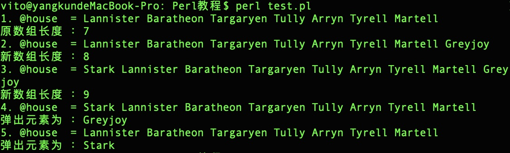
切割数组
我们可以切割一个数组，并返回切割后的新数组：
实例
#!/usr/bin/perl
@houses = qw/Lannister Baratheon Targaryen Tully Arryn Tyrell Martell Greyjoy Stark/;
@houses2 = @houses[-1,2,0,1];
print "@houses2\n";
执行以上程序，输出结果为：
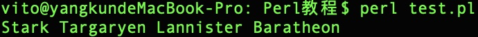
数组索引需要指定有效的索引值，可以是正数后负数，每个索引值使用逗号隔开。
如果是连续的索引，可以使用 .. 来表示指定范围,如(1..5)代表(1,2,3,4,5)
实例
#!/usr/bin/perl
@houses = qw/Lannister Baratheon Targaryen Tully Arryn Tyrell Martell Greyjoy Stark/;
@houses2 = @houses[3..6];
print "@houses2\n";
执行以上程序，输出结果为：
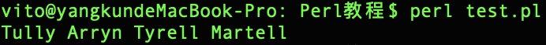
替换数组元素
Perl 中数组元素替换使用 splice() 函数，语法格式如下：
splice @ARRAY, OFFSET [ , LENGTH [ , LIST ] ]
参数说明：
- @ARRAY：要替换的数组。
- OFFSET：起始位置。
- LENGTH：替换的元素个数。
- LIST：替换元素列表。
以下实例从第6个元素开始替换数组中的5个元素:
实例
#!/usr/bin/perl
@nums = (1..20);
print "替换前 - @nums\n";
splice(@nums, 5, 5, 21..25);
print "替换后 - @nums\n";
执行以上程序，输出结果为：
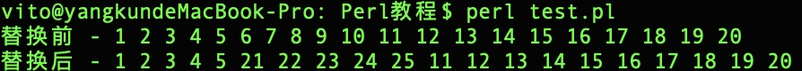
将字符串转换为数组
Perl 中将字符串转换为数组使用 split() 函数，语法格式如下：
split [ PATTERN [ , EXPR [ , LIMIT ] ] ]
参数说明：
- PATTERN：分隔符，默认为空格。
- EXPR：指定字符串数。
- LIMIT：如果指定该参数，则返回该数组的元素个数。
实例
#!/usr/bin/perl
$var_test = "silverhand";
$var_string = "for-the-horde";
$var_archangels = "Michael,Gabriel,Uriel,Raphael";
@test = split('', $var_test);
@string = split('-', $var_string);
@archangels = split(',', $var_names);
print "$test[6]\n";
print "$string[2]\n";
print "$names[3]\n";
执行以上程序，输出结果为：
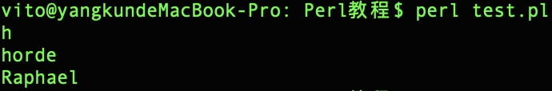
将数组转换为字符串
Perl 中将数组转换为字符串使用 join() 函数，语法格式如下：
join EXPR, LIST
参数说明：
实例
#!/usr/bin/perl
$var_string = "for-the-horde";
$var_archangels = "Michael,Gabriel,Uriel,Raphael";
@string = split('-', $var_string);
@archangels = split(',', $var_names);
$string1 = join( '|', @string );
$string2 = join( '|', @names );
print "$string1\n";
print "$string2\n";
执行以上程序，输出结果为：
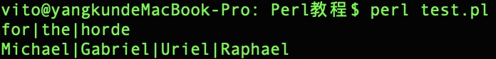
数组排序
Perl 中数组排序使用 sort() 函数，语法格式如下：
sort [ SUBROUTINE ] LIST
参数说明：
- SUBROUTINE：指定规则。
- LIST：列表或数组。
实例
#!/usr/bin/perl
@archangels = qw(Michael Gabriel Uriel Raphael);
print "排序前: @archangels\n";
@archangels = sort(@archangels);
print "排序后: @archangels\n";
执行以上程序，输出结果为：
注意：数组排序是根据 ASCII 数字值来排序。所以我们在对数组进行排序时最好先将每个元素转换为小写后再排序。
特殊变量： $[
特殊变量 $[ 表示数组的第一索引值，一般都为 0 ，如果我们将 $[ 设置为 1，则数组的第一个索引值即为 1，第二个为 2，以此类推。实例如下：
实例
#!/usr/bin/perl
@archangels = qw(Michael Gabriel Uriel Raphael);
print "Archangels: @archangels\n";
$[ = 1;
print "\@archangels[1]: $archangels[1]\n";
print "\@archangels[2]: $archangels[2]\n";
执行以上程序，输出结果为：
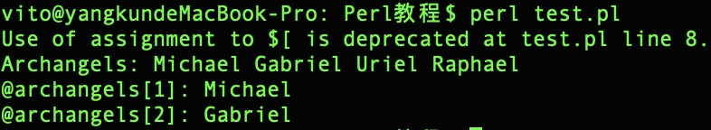
一般情况我们不建议使用特殊变量 $[，在新版 Perl 中，该变量已废弃。
合并数组
数组的元素是以逗号来分割，我们也可以使用逗号来合并数组，如下所示：
实例
#!/usr/bin/perl
@numbers = (1,3,(4,5,6));
print "numbers = @numbers\n";
执行以上程序，输出结果为：
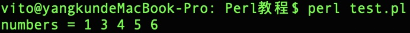
也可以在数组中嵌入多个数组，并合并到主数组中：
实例
#!/usr/bin/perl
@odd = (1,3,5);
@even = (2, 4, 6);
@numbers = (@odd, @even);
print "numbers = @numbers\n";
执行以上程序，输出结果为：
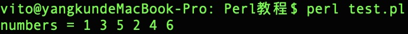
从列表中选择元素
一个列表可以当作一个数组使用，在列表后指定索引值可以读取指定的元素，如下所示：
实例
#!/usr/bin/perl
$var = (5,4,3,2,1)[4];
print "var 的值为 = $var\n"
执行以上程序，输出结果为：
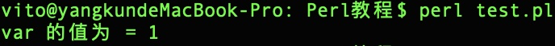
同样我们可以在数组中使用 .. 来读取指定范围的元素：
实例
#!/usr/bin/perl
@list = (5,4,3,2,1)[1..3];
print "list 的值 = @list\n";
执行以上程序，输出结果为：
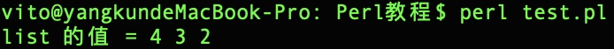